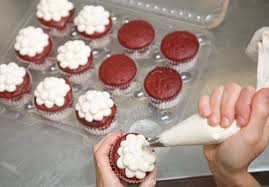

We believe everyone deserves to taste beautiful, so we’ve spent months developing our ever growing range of free from cupcakes and cakes, including our award-winning Vegan Coconut and Passionfruit cupcake.
All of our products are made in the same environment. Whilst some of our products are made without certain ingredients, such as gluten, refined sugar, dairy, nuts, eggs, they are all likely to contain trace amounts of these ingredients. If you require further information to help you in your selection please contact our head office.
fruit-desserts
